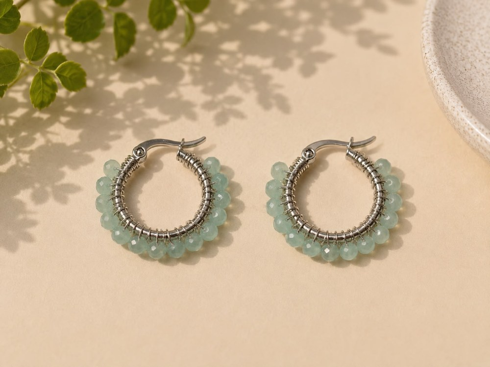

Argollas Cristal Celeste
Código AG-024 · Argollas de cristal
$4.990
Disponible
Medida: Aprox. 2.5cm
Material: acero quirúrgico
Hechos a mano en Chile

Argollas Cristal Celeste de Karivé Joyas. Aros artesanales hechos a mano en Chile, en acero quirúrgico. Medida Aprox. 2.5cm. Colección Argollas de cristal. Código AG-024.